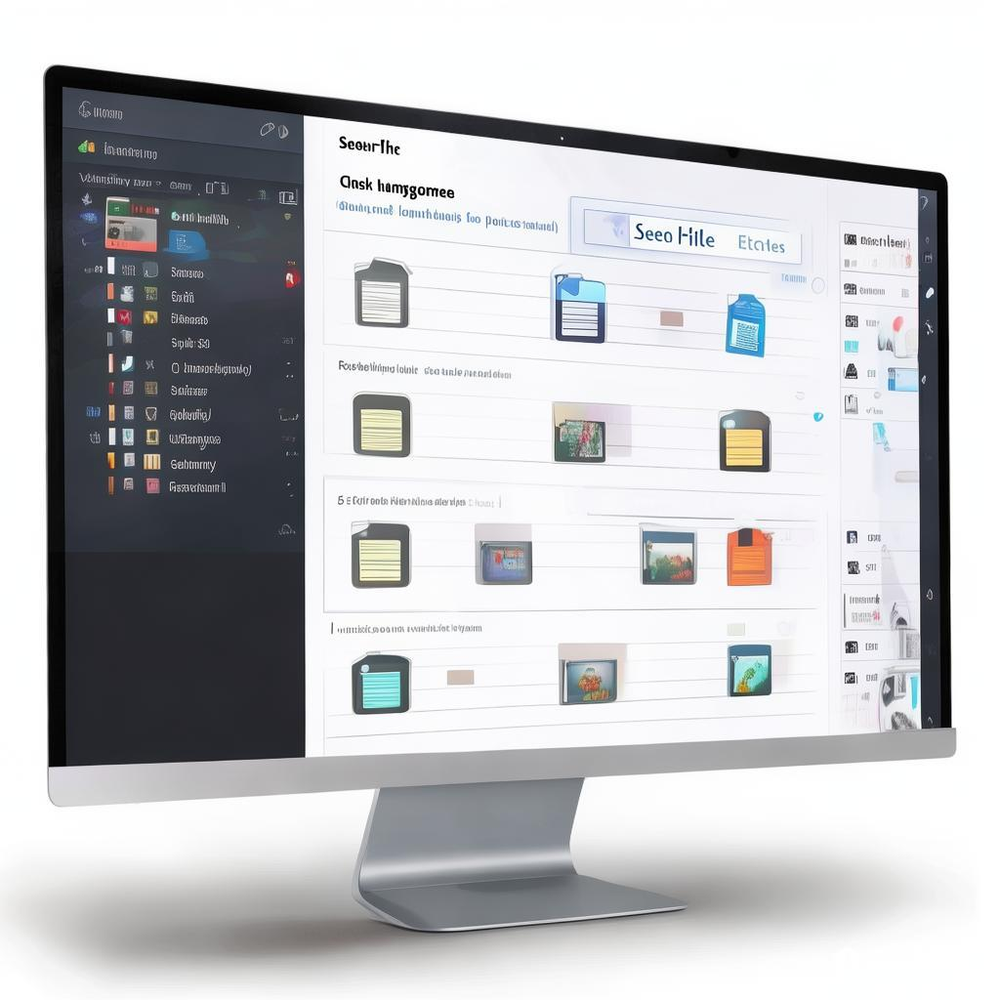

你是否曾经历过那种令人疯狂的时刻？正在紧张地赶着项目，突然接到领导的催促，翻遍了整个电脑，却依然找不到那个重要的文件！
脑海里不停闪现：我到底把它放在哪了？
在那一瞬间，瞬间觉得整个世界都在嘲笑你——这酸楚可不是其他人能懂的，因为打工人的生活已经够难了！想着之前为了这个文件熬夜加班，结果却在关键时刻失手，真是气得忍不住想把电脑砸了。
如果你也深感文件难寻的绝望，那么这篇文章将为你带来惊喜！
今天，我将告诉你一些简单却有效的方法，帮助你快速找到电脑里的文件，让你从此告别那些恼人的找文件时刻！快来一起看看吧！

震惊！这么简单的方法让你快速找到电脑里的文件！
工作生活中，常常会面临到找不到文件的窘境。尤其当你急需一份资料，却因为种种原因翻遍了所有可能的文件夹，却还是束手无策，心情可想而知。这样的场景对于许多打工人来说，就像是职场恶梦。此时此刻，你需要的不仅仅是寻找文件的技巧，更是一种高效的心态。
不再浪费时间在琐碎的文件管理上，充分利用搜索工具，你的工作效率绝对能提升一个档次！当然，掌握一些小窍门，能让你在找文件的过程中如鱼得水，让你的工作变得轻松愉快。 这里，我们将分享几种快速找文件的方法，助你在关键时刻从容应对，重拾工作信心。
下面，我们来深入了解如何轻松掌握这些快速找到文件的方法，确保你在未来不再经历这样令人绝望的时刻。无论是使用系统自带的搜索功能，还是一些优秀的工具，都会让你大大节省寻找文件的时间。
轻松掌握：文件搜索的小技巧
首先，我们需要了解每个文件搜索工具的基本功能。Windows系统内置的文件搜索功能，在开始菜单栏处就能看到简洁大方的搜索框。只需输入文件名的部分或全部内容，甚至你还可以用特定的文件类型进行搜索，例如输入“*.doc”来搜索所有doc文件。
而对于Mac用户，Spotlight搜索是一项比较强大的功能。在屏幕右上角的放大镜图标，点击后输入你要找的文件名或关键词，就能迅速找到对应的文件。此外，利用“智能文件夹”功能，能更直观地管理文件，更容易找到你需要的资料。
不过，简单的搜索并不总是足够的，如果你知道大概文件的存放路径，记得在寻找时加上路径，这样能使搜索更精准。
如果你想寻求高效而多功能的搜索工具，不妨试试“seekfile”。无论是文档、图片，甚至音频和视频文件，它都可以帮你快速找到。它支持自然语言搜索，让用户可以用最自然的问法轻松找到所需文件，提供了极佳的搜索体验。
提升效率：使用搜索功能解锁文件
在找文件的过程中，掌握一些实用的技巧，绝对能让你提升效率。当你在电脑中找到大量文件的时候，快速查找成了重中之重。很多人可能不知道，操作系统的搜索功能可以通过添加一些过滤条件使搜索精准度大大提高。
比如，在Windows系统中，除了输入文件名外，你可以通过文件类型、大小、创建日期进行筛选，让搜索范围变小，从而更快找到你想要的文件。而对Mac用户来说，应用Spotlight搜索时，也可以按住“Command”键并点击文件以便于快速预览，避免花费时间在不必要的文件上。
值得一提的是，记得定期做文件整理，不要让文档长时间处于混乱状态。分类别保存，文件重新命名，这样种种都能减少你在寻找文件时的时间，让你更加游刃有余。
此外，搭配“seekfile”使用，让你的文件管理变得更简单。这个多端覆盖的工具支持本地运行部署，确保你的文件在本地的隐私完全安全，加上搜索时的高度智能化，真可谓是工作帮助者。
整理你的文件夹：分类管理的艺术
文件夹的管理同样至关重要，如果你的文件夹结构不善，简直就是在与自己作对！为了避免文件混乱，首先要养成好习惯，干脆从一开始就整理好你的文件。比如可以按项目、时间或主题整理文件夹，使用好用的标签和颜色标记，让你的文件更加清晰。
除了开设必要的文件夹外，分类细致也能提高寻找文件的速度。例如，在“工作”文件夹里，可以再细分为“项目A”、“项目B”和“会议资料”等等。这样一来，相关文件一目了然，随时随地只需点几下，就能轻松找到所需。
整理文件夹的同时，还要对文件命名保持一致性，采用易于辨识的命名方式，比如日期、项目名、文件性质等，养成这样的好习惯，可以在文件过多的情况下，不必翻遍文件夹就能快速找到你需要的资料。
在这样的整理过程中，使用“seekfile”会让你的整理变得更加简单和顺畅。它强大的搜索能力，可以为你提供在不同设备上快速找到文件的体验，让文件管理和搜索变得轻松舒适。无论你身处何地，随时随地管理自己的文件，重拾工作效率！